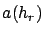

Siguiente: Modelo de Erceg-SUI
Subir: Modelo de Okumura-Hata
Anterior: Entorno rural
Índice General
Modelo de Okumura-Hata COST231
Éste es el modelo al que generalmente se refiere como Okumura-Hata.
El modelo original se puede utilizar para frecuencias de transmisión
menores a 1500 MHz. Ahora bien, las tecnologías celulares que hoy en
día son las más extendidas utilizan frecuencias por encima de dicho
rango (por ejemplo, GSM utiliza las bandas de 1800 y 1900 MHz). Por
ello, el grupo de trabajo COST Action 231 extendió el rango de
frecuencias donde el modelo es válido. El resultado es una nueva
fórmula para el caso en que la frecuencia esté entre los 1500 y 2000
MHz. Ésta resulta [16]:
donde  ya se definió y  vale 0 dB para ciudades de
mediano porte y centros suburbanos y 3 dB para centros
metropolitanos.
vale 0 dB para ciudades de
mediano porte y centros suburbanos y 3 dB para centros
metropolitanos.
SAPO